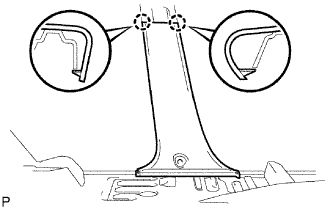
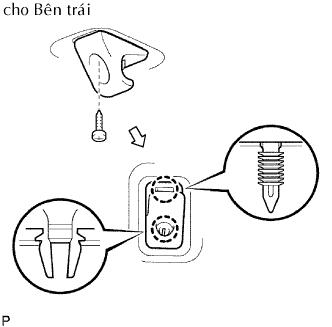
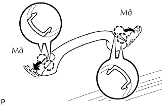

KÍNH CHẮN GIÓ > THÁO |
| 1. NGẮT CÁP ÂM RA KHỎI ẮC QUY |
| 2. THÁO CỤM GƯƠNG CHIẾU HẬU BÊN TRONG |
Push the cover in the direction indicated by the arrows labeled A and remove it.
While holding down the claw in the direction of the black arrow labeled B, slide the mirror in the direction of the white arrow and remove it.
| 3. THÁO TRANG TRÍ BẬU CỬA TRƯỚC TRÁI |
Tháo một phần của gioăng cửa trước trái sao cho có thể được ốp trang trí trụ xe trước trái. (Xem trang Kích chuột vào đây).
| 4. THÁO GIOĂNG CỬA TRƯỚC PHẢI |
| 5. THÁO TRANG TRÍ DƯỚI TRỤ XE TRƯỚC TRÁI |
Tháo bulông và ngắt móc đai an toàn.
|  |
Dùng tôvít, nhả khớp 2 vấu và tháo ốp trang trí.
| 6. THÁO TRANG TRÍ DƯỚI TRỤ XE TRƯỚC PHẢI |
| 7. THÁO TRANG TRÍ TRỤ XE TRƯỚC TRÁI |
 |
Dùng dụng cụ tháo kẹp, tách 3 kẹp.
Kéo tấm ốp trang trí theo hướng chỉ ra bởi mũi tên trong hình vẽ để nhả khớp 3 vấu. Sau đó tháo ốp trang trí (có ốp trang trí phía dưới).
Tháo ốp trang trí phía dưới ra khỏi miếng ốp.
| 8. THÁO TRANG TRÍ TRỤ XE TRƯỚC PHẢI |
| 9. THÁO CỤM ĐÈN XEM BẢN ĐỒ (w/ Đèn xem bản đồ) |
 |
Tháo 2 vít.
Kéo đèn xem bản đồ về phía trước xe và tháo đèn xem bản đồ như trong hình Vẽ.
Tháo giắc nối đèn.
| 10. THÁO CỤM CHẮN NẮNG TRÁI |
Tháo 2 vít và chắn nắng.
| 11. THÁO CỤM CHẮN NẮNG PHẢI |
Tháo 2 vít và chắn nắng.
| 12. THÁO GIÁ ĐỠ CHẮN NẮNG TRÁI |
|  |
Tháo vít.
Dùng tôvít, tách 2 vẫu hãm và tháo giá đỡ.
| 13. THÁO GIÁ ĐỠ CHẮN NẮNG PHẢI |
Tháo vít.
Dùng tôvít, tách 2 vẫu hãm và tháo giá đỡ.
| 14. THÁO TAY NẮM |
|  |
Dùng tôvít, nhả khớp 4 vấu và mở 2 nắp.
Tháo 2 vít và tay nắm.
| 15. THÁO CỤM ỐP TRẦN XE |
Tháo một phần ốp trần xe (Xem trang Kích chuột vào đây).
| 16. THÁO NẮP CHE ĐẦU TAY GẠT NƯỚC PHÍA TRƯỚC |
Tháo 2 nắp.
| 17. THÁO CỤM TAY GẠT VÀ LƯỠI GẠT NƯỚC TRƯỚC TRÁI |
Tháo đai ốc và tay gạt và lưỡi gạt.
| 18. THÁO CỤM TAY GẠT VÀ LƯỠI GẠT NƯỚC TRƯỚC PHẢI |
 |
Tháo đai ốc và tay gạt và lưỡi gạt.
| 19. THÁO GIOĂNG PHÍA TRÊN TỪ NẮP CAPÔ ĐẾN VÁCH NGĂN |
 |
Gắn 12 kẹp và tháo phớt.
| 20. THÁO CỤM MÁNG THÔNG GIÓ TRÊN VÁCH TÁP LÔ PHẢI |
Tháo vít.
Nhả 5 khóa cài và 4 kẹp và tháo tấm thông gió.
| 21. THÁO CỤM MÁNG THÔNG GIÓ TRÊN VÁCH TÁP LÔ TRÁI |
 |
Tháo vít.
Nhả 5 khóa cài và 4 kẹp và tháo tấm thông gió.
| 22. THÁO NỐI TAI XE TRONG VỚI VÁCH NGẮN TRÁI |
Dùng đèn khò, sấy keo.
Tháo keo làm kín.
| 23. THÁO NỐI TAI XE TRONG VỚI VÁCH NGĂN PHẢI |
| 24. THÁO NẸP BÊN NGOÀI KÍNH CHẮN GIÓ |
Dùng một dao, cắt gioăng như được chỉ ra trên hình vẽ.
Tháo nẹp còn lại.
| 25. THÁO KÍNH CHẮN GIÓ |
Dán băng dính bảo vệ ra mặt bên ngoài của thân xe để chống xước.
Từ bên trong, hãy luồn dây thép giữa thân xe và kính như được chỉ ra trên hình vẽ.
Hãy buộc các vật thể bằng tay (như các khối gỗ) vao cả hai đầu dây.
Đặt các dấu ghi nhớ trên kính và thân xe ở các vị trí như được chỉ ra trên hình vẽ.
Cắt hết keo bằng cách kéo dây thép quanh kính.
Nhả khớp các hãm kính.
Dùng các giác hút, tháo kính.
| 26. LAU KÍNH CHẮN GIÓ |
Dùng dao, bóc cái hãm bị hỏng, đệm kính và keo dính lên kính.
Làm sạch các mép ngoài của kính bằng xăng trắng.
| 27. LAU SẠCH THÂN XE |
Lau và sử lại hình dạng mặt tiếp xúc của thân xe.
Trên mặt tiếp xúc của thân xe, hãy dùng dao cắt phần keo thừa như được chỉ ra trên hình vẽ.
Lau sạch mặt tiếp xúc của thân xe bằng máy làm sạch.